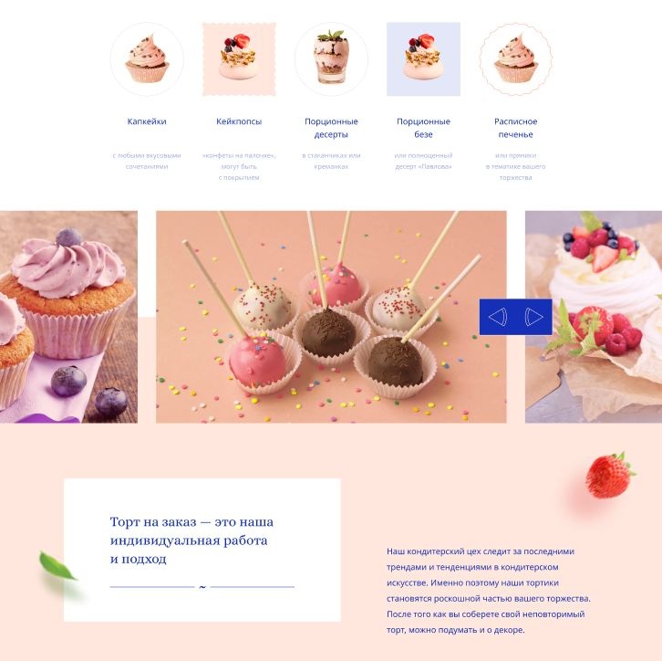
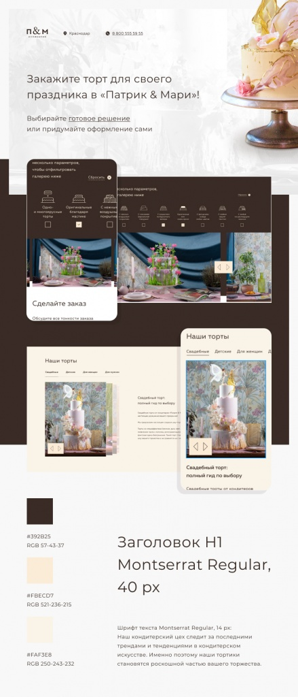
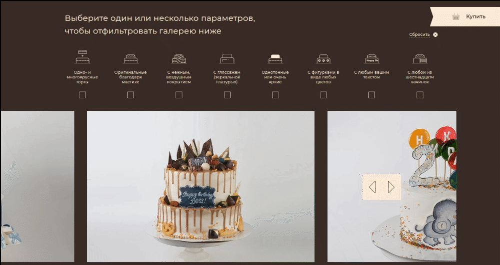

О проекте
Оглавление
- О клиенте
- Цель
- Задачи
- Концепция
- Дизайн
- Фишки и изюминки
- Результат
Можно ежедневно посещать спортивный зал, есть омлет на завтрак и баловаться зелёными смузи, но как только на горизонте появляется классный торт — мы все бессильны. В ходе работы над проектом «Патрик & Мари» пострадало несколько сантиметров нашей талии, но главное, что заказчик счастлив (и мы, на самом деле, тоже).
О клиенте
Сеть европейских кулинарий «Патрик & Мари» — это место с уникальными традициями. Простой, но очень эффективный секрет проекта: свежие и натуральные продукты, насыщенный вкус и соблюдение всех имеющихся стандартов качества. Одним из самых популярных направлений деятельности является изготовление тортов на заказ — именно для него и было решено создать отдельный лендинг.
Цель
Разработать адаптивный лендинг, помогающий компании запомниться и выделиться на фоне конкурентов.
Задачи
1. Выгодно показать бренд не только как кулинарию, но и как отличную кондитерскую, в которой можно заказать десерты под любое мероприятие.
2. Разработать сайт, представив преимущества, услуги и продукты в понятном, структурированном и визуально привлекательном виде.
Концепция
На этапе подготовки концепта мы разработали два варианта: сине-персиковая и бежево-коричневая цветовая гамма:
1. Зачастую конкурентные компании выбирают оттенки бежевого, коричневого, оливкового и белого цветов. Такая цветовая гамма никак не выделяется на общем фоне, но и уходить от нее в противоположный яркий спектр тоже не хотелось, ведь это может вызвать диссонанс у потребителя между содержанием и обёрткой. Поэтому мы взяли за основу привычный для пользователя пастельный цвет пекарни (персиковый) и добавили к нему акцентный синий, что как бы говорит и о сохранении традиций, и о новаторском подходе в кондитерском деле. Для концепта, кстати, даже иконки отрисовали, символизирующие кусочки торта.

2. Классические бежево-коричневые тона, которые так хорошо знакомы гостям «Патрик & Мари» и не отделяют его от уже существующего бренда. Именно на этом варианте и остановился клиент.
Дизайн
Основной критерий в разработке дизайна — узнаваемость бренда. Мы сделали упор на ассоциативную классическую палитру в виде сливочно-шоколадных тонов и разбавили её пастельными фотографиями от заказчика, получилось свежо и «вкусно».
Минимализм и лёгкость подачи контента расставили акценты на важных аспектах — аппетитных изображениях продукции и лаконично проработанных текстах. Такой подход позволил нам избежать визуального и информационного шума и сконцентрировать внимание пользователя на ключевых деталях лендинга.

Фишки и изюминки
Мы сделали классный фильтр по тортам, где каждый сможет отфильтровать их по желаемым параметрам и посмотреть уже выполненные работы. А еще разработали удобную карту, где можно посмотреть все адреса кулинарий.

Результат
На выходе у нас получился очень аккуратный, понятный и стильный лендинг, закрывающий первичные вопросы клиентов о заказных тортах.
Оцените итог проделанной работы прямо сейчас — просто кликайте сюда. А если у вас есть идеи, то добро пожаловать в комфортный ореховый офис. С радостью вас выслушаем и поможем с реализацией.